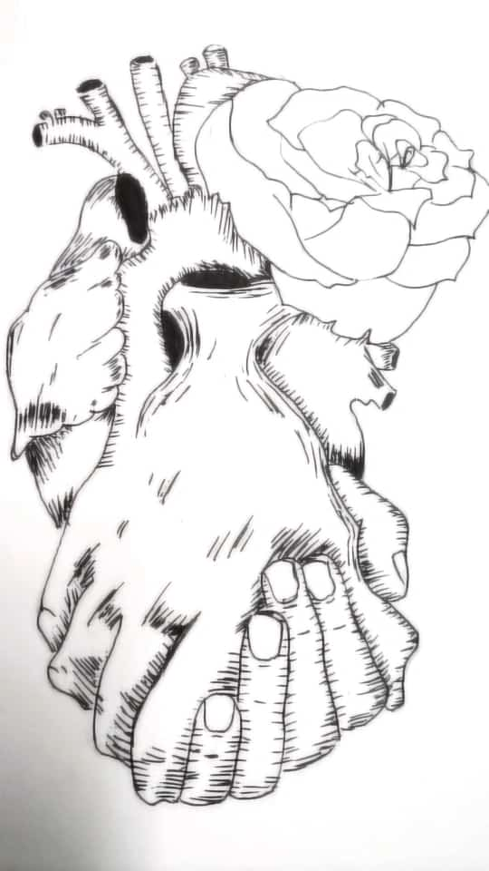
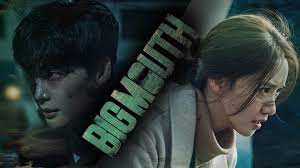

MY HOBBIES |
|
|

|
DrawingDrawing is an exercise for the hand, mind, and eyes, and the activity provides benefits that can be applied to many aspects of life, from work to relationships. Understand how you can utilize the healing capabilities and cognitive benefits of drawing, which are outlined below. In addition to creativity, there are cognitive and cerebral benefits to sketching. We use our brains when we draw, and this not only releases endorphins, but helps build new connections and pathways. When drawing, we actively use both sides of our brain, the right for creativity, and the left for logical thinking. This strengthens both and helps develop the ability to focus and think strategically. |
Watching KdramaAs you watch the kdrama, your mind is also at work conjuring up the scene that took place. The stimulation it provides the brain is excellent. Indeed, since the human brain needs to remain busy, it can support a healthy brain. In this situation, it is advised to watch dramas in the thriller, suspense, and criminal genres. These subgenres are known to make it difficult for you to focus on and retain intricate plots, including red herrings, from one episode to the next. The more you exercise your brain, the better and sharper it gets. That's great, isn't it? You need some healthy hobbies to deal with stress and despair, therefore engage in them. You can do it by watching Korean drama, for example. It will aid the treatment of depression and stress. Serotonin (which makes us feel happy) and dopamine are released into the brain as a result of the limbic system being correctly stimulated. These substances are recognised to aid in generating a contented and joyful sensation. Therefore, if you want to relieve your tension and despair, you should think about watching Korean drama. |

|